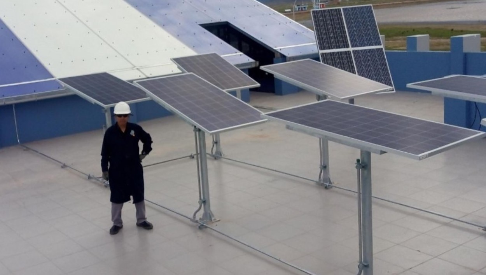
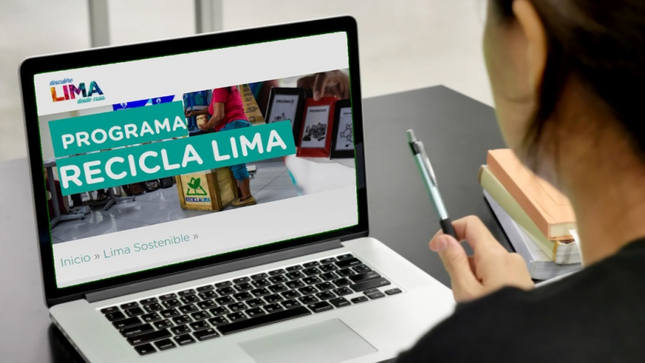
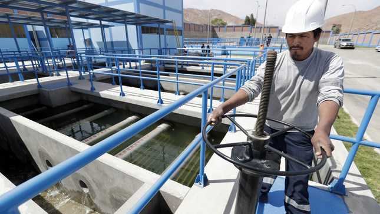
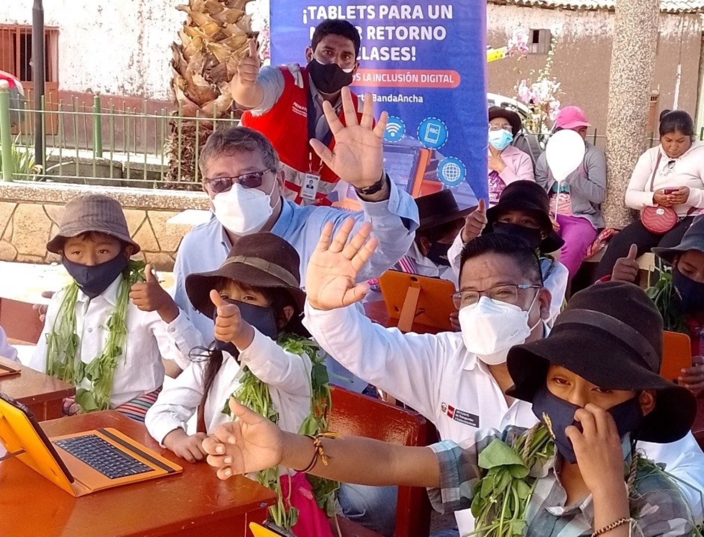

Presentacion de los Testimonios
En un mundo comprometido con la Responsabilidad Social
Empresarial (RSE), los testimonios presentados reflejan el poder transformador de un
ingeniero de sistemas comprometido con la responsabilidad social. Estas experiencias muestran
cómo la ingeniería de sistemas aplicada éticamente genera cambios significativos. Descubre cómo la tecnología puede tener un
impacto positivo y sostenible en la sociedad a través de estos testimonios inspiradores.
Cludy Rosmery: Alcaldesa de la provinvia de Espinar en Cusco
Proyecto de energía solar en comunidades rurales

Como alcaldesa, tengo grandes expectativas para nuestro proyecto de energía solar en comunidades rurales. Espero reducir la dependencia de
combustibles fósiles y mejorar la calidad de vida de nuestros ciudadanos. El ingeniero de sistemas desempeña un papel fundamental en
este proyecto al diseñar, implementar y mantener el sistema de energía solar. Su experiencia técnica garantiza la eficiencia y
confiabilidad del sistema, y al mismo tiempo cumple con su responsabilidad social al contribuir al desarrollo sostenible. Al
proporcionar acceso a una fuente de energía limpia y renovable, el ingeniero de sistemas mejora la calidad de vida de las personas y
promueve la conciencia ambiental en nuestras comunidades. Los invito a unirse a nosotros y trabajar juntos para lograr un futuro más
brillante y sostenible para Puno, donde la participación de la comunidad, respaldada por el conocimiento del ingeniero de sistemas, es
clave para alcanzar nuestros objetivos.
Jorge Muñoz Wells: Alcalde de la Municipalidad de Lima
programa lanzado en 2021 para promover el reciclaje

Me complace presentarles nuestro programa lanzado en 2021 para promover el reciclaje y la gestión adecuada de residuos en Lima. En este esfuerzo colectivo por cuidar nuestro medio ambiente y construir una ciudad más verde, el papel del ingeniero de sistemas es fundamental. A través de la implementación de soluciones tecnológicas, el ingeniero de sistemas contribuye al éxito de este programa, facilitando la separación de residuos, promoviendo el uso de bolsas reutilizables y apoyando la educación ambiental. Cada pequeño gesto cuenta y, con la participación activa de la comunidad, podemos hacer de Lima un hogar más saludable y sostenible para todos. Unámonos en este compromiso y trabajemos juntos para construir un futuro más verde y promover la preservación del medio ambiente.
Milton von Hesse: Ministro de Agricultura y de Vivienda
Planta de tratamiento de aguas residuales

Gracias a la construcción de una planta de tratamiento de aguas residuales, hemos logrado un impacto positivo en la salud y el bienestar de nuestros ciudadanos en Arequipa. Ahora, podemos disfrutar de un suministro de agua más limpio y seguro, lo cual nos llena de orgullo. En este esfuerzo continuo por preservar y proteger nuestros recursos hídricos para las generaciones venideras, el papel del ingeniero de sistemas ha sido crucial. Su experiencia técnica ha contribuido al diseño y funcionamiento eficiente de la planta de tratamiento, asegurando que el agua residual sea tratada adecuadamente antes de ser liberada al medio ambiente. Los invito a unirse a nosotros en este compromiso, trabajando juntos para hacer de Arequipa un lugar aún más hermoso para vivir, donde nuestros recursos hídricos sean preservados y cuidados de manera sostenible.
Martin Benavides: Ministro de Educacion
La Educación Digital en Huancavelica

Nuestro programa, iniciado en 2021, tiene como objetivo mejorar la educación digital y fomentar la inclusión social en Huancavelica, nuestra amada región. Estamos comprometidos en brindar igualdad de oportunidades a través de programas educativos y tecnológicos, y nuestras expectativas son altas. Con avances significativos en el acceso y la calidad de la educación, estamos creando un futuro prometedor y equitativo para todos en Huancavelica. En este esfuerzo, el ingeniero de sistemas juega un papel fundamental al desarrollar y proporcionar soluciones tecnológicas adaptadas a nuestras necesidades educativas. Invito a todos a unirse a nosotros en este camino hacia la inclusión y la transformación educativa, trabajando juntos para construir un Huancavelica próspero y con oportunidades para todos.